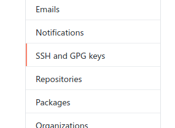

Início
Introdução
Essa documentação tem como objetivo demonstrar os processos básicos necessários para o desenvolvimento dos softwares envolvidos na construção do sistema supervisório do Cheetah E-Racing. Os procedimentos serão organizados em dois sistemas: o backend (código que roda no servidor) e o frontend (código que roda nos computadores clientes).:
Git
O primeiro passo para trabalhar no sistema supervisório é obter o código. É possível baixar como um .zip no github da equipe, porém isso torna difícil o controle de versionamento e a organização entre os membros. Assim, a melhor maneira é instalar o git no PC e fazer um clone do seu fork do repositório.
Instalando o git
Linux
O jeito mais rápido de instalar o git é utilizando o gerenciador de pacotes da sua distribuição. Em sistemas baseados em debian (Ubuntu/Pop OS/Mint/Raspberry PI OS), basta executar como superusuário:
sudo apt update && sudo apt install gitsudo yum install gitWindows
Para instalar o git no Windows, siga as instruções no site oficial:
Git SCM
Criando um fork
Após criar uma conta no github, acesse a página do supervisório do cheetah:
Em seguida, basta clicar no botão de "fork":
O fork é uma cópia do repositório vinculada à sua conta de usuário, e é nele que as modificações devem ser feitas. Alterar o código utilizando a conta do cheetah diretamente é uma prática que deve ser evitada ao máximo, pois impossibilita o controle do responsável por cada modificação.
Criando chaves SSH
Para enviar seu código ao github, é necessário se autenticar no site. A autenticação por usuário/senha está sendo desativada aos poucos, e deixará de funcionar em breve (Se você está lendo isto no futuro, é provável que já tenha sido desativada). Portanto, é necessário utilizar outro método de autenticação, e uma maneira simples de fazer isso é adicionando chaves SSH à sua conta do github. Para gerar um par de chaves pública/privada, abra o terminal / powershell e execute o comando:
ssh-keygen- Abra as configurações da conta

- Vá até a opção de chaves SSH e GPG
 - Clique em adicionar nova chave SSH

- Dê um título de sua preferência e cole a chave pública copiada no campo key

Clonando o repositório
Para criar uma cópia local do seu repositório, copie o link no botão "code", lembrando que é necessário selecionar a opção "SSH":

Em seguida, abra o terminal / git shell (o git shell pode ser aberto clicando com o botão direito do mouse em um espaço branco dentro de uma pasta qualquer do Windows) e execute o comando:
git clone <cole o link que você copiou aqui> Git Commit
Após realizar as alterações no código local, é necessário enviá-las ao repositório remoto (github). Para isso, abra o terminal / git shell dentro da pasta clonada e execute os comandos:
git add -A git commit -m "Escreva aqui uma mensagem breve explicando as alterações realizadas desde o último commit" git push origin main git statusAtualizando o repositório
Para garantir que você está trabalhando na versão mais recente do código, é necessário sincronizar o seu fork com o repositório original (comumente chamado de upstream). Para isso, adicione o repositório original no seu git:
git remote add upstream git@github.com:TelemetriaCheetah/Supervisorio.gitgit fetch upstreamgit pull upstream mainCriando um pull request
Finalmente, para submeter suas alterações para o repositório upstream, basta criar um pull request clicando em "pull requests" e em seguida "criar novo pull request". O request deve ser aprovado pelo mantenedor do repositório oficial do Cheetah.
Instalando o node
Linux
Em sistemas baseados em debian (Ubuntu/Pop OS/Mint/Raspberry PI OS), basta executar como superusuário:sudo apt update && sudo apt install nodejsWindows
Para instalar o node no Windows, siga as instruções no site oficial:node.js
Instalando o MySQL
Linux
Em sistemas baseados em debian (Ubuntu/Pop OS/Mint/Raspberry PI OS), basta executar como superusuário:sudo apt update && sudo apt install apache2 mariadb-server phpmyadminWindows
No Windows, é possível baixar pacotes que incluem todas as ferramentas necessárias para rodar um servidor apache com MySQL/MariaDB e php em um único executável. Um exemplo recomendado é o WAMP (Windows Apache MySQL PHP) server, que pode ser baixado no link:WAMP Server
Tutoriais de programação
O sistema supervisório é escrito utilizando javascript para o frontend e backend, portanto javascript é a linguagem que deve ser o foco dos estudos. Para
a formatação do site são utilizados HTML5 e CSS, e portanto é necessário possuir conhecimento dessas linguagens também. Além disso,
os dados coletados são armazenados em um banco de dados MySQL, e familiaridade com queries SQL é bastante útil. Seguem abaixo alguns links relevantes sobre os assuntos:
URI Online Judge - para treinar algoritmos e básico de programação
JavaScript básico - documentação da Mozilla
Curso javascript básico - youtube
Introdução ao node.js - youtube
Introdução ao MySQL - youtube
Introdução HTML5 e CSS - youtube